PHD2 漂移法对极轴工具
PHD2 的漂移对极轴工具可以帮助你快速、精确地对准赤道仪极轴。这个过程需要稍加练习，但操作几次之后，通常几分钟就能准确对准。可以使用独立导星镜，也可以使用主镜，选择更方便的方式即可。
准备工作
- 确认赤道仪基本保持水平。
- 确认望远镜已平衡，并准备好进行导星。
- 如果有极轴镜，先用它粗略对准极轴；否则，确保赤道仪极轴朝向天极，高度设置与所在地纬度相符。
- 确认站在赤道仪旁边时，仍能看清计算机屏幕。
- 启动 PHD2 并连接设备。
- 请使用较新的 PHD2 版本。
- 以下说明假设赤道仪通过 ASCOM 连接，因此 PHD2 知道望远镜指向。没有 ASCOM 连接也能进行漂移对极轴，参见关于 ASCOM 的说明。
- 在方便的位置选择导星星点完成标定，最好位于赤纬 0° 附近 ±20° 范围内；若通过 ASCOM 或 INDI 连接，也可以加载已有的准确标定。确保标定适用于准备进行对极轴操作的赤道仪墩侧。如果采用“相机上（On-camera）”导星接口，请在计划操作的墩侧重新标定。标定与当前墩侧不符时，漂移方向会发生改变，此前记录的方向说明就不再正确。
- 确认 PHD2 设置中的导星镜焦距与相机像元尺寸正确。焦距位于“大脑”高级设置的“全局”页，像元尺寸位于“相机”页。
现在可以开始漂移法对极轴了。
方位角调整
打开漂移对极轴工具：
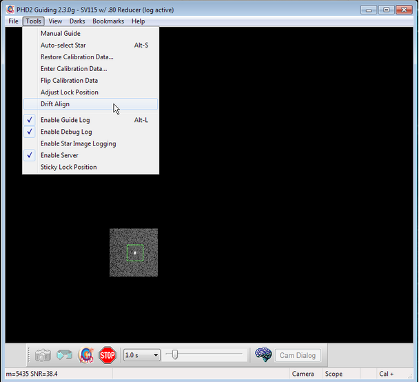
会看到类似下面的窗口：
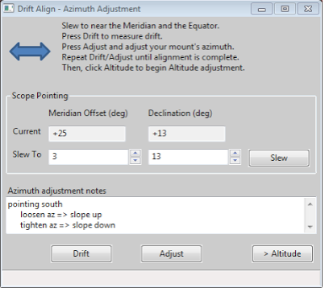
先将望远镜移到适合调整方位角的位置，即子午线与天赤道附近。可以点击“转向（Slew）”，也可以手动移动赤道仪。望远镜此时的指向应类似下图：
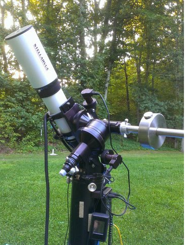
漂移对极轴窗口会显示为：
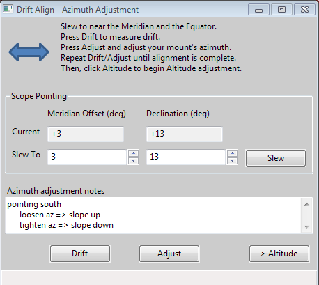
注意，当前位置距子午线只有几度，见“子午线偏移（Meridian offset）”；赤纬值也很小，说明靠近天赤道。
接下来交替执行测量误差的“漂移（Drift）”和修正赤道仪的“调整（Adjust）”。赤纬漂移速率反映极轴对准误差的大小。每次调整都应减小误差，重复这个过程，直到误差接近零。
点击“漂移”开始测量赤纬漂移。PHD2 会选取星点并开始导星。稍等片刻，应看到类似下图的结果：
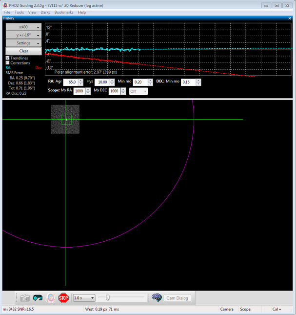
重点观察红色的赤纬趋势线。开始时它可能上下跳动，随后噪声逐渐平均，斜率会趋于稳定。此时就可以调整赤道仪方位角。
目标是让赤纬趋势线变平，不随时间向上或向下倾斜。调整赤道仪方位角会改变这条趋势线的斜率。
第一次调整时，你可能不知道该向东还是向西转，PHD2 也无法预先判断，因此只能先试一个方向，成功概率约为一半。选对方向后，新趋势线会更平、更接近水平；选错后，漂移速率会增大，例如上例中的向下斜率会更陡。
点击“调整”，PHD2 会停止导星，随后即可调整赤道仪。画面类似下图：
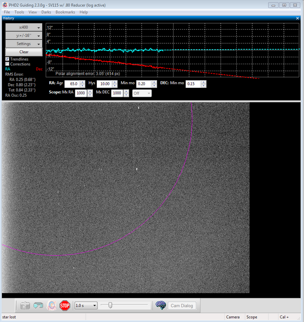
缓慢转动方位角调节旋钮，同时观察屏幕，让导星星点向品红色圆圈移动。圆圈表示需要移动的距离。赤纬斜率越大，圆圈越大，初始时可能大到超出屏幕，这是正常现象。如果看不到圆圈，可先移动约一个屏幕宽度；如果看得到，就将星点移到圆圈上，如下图：
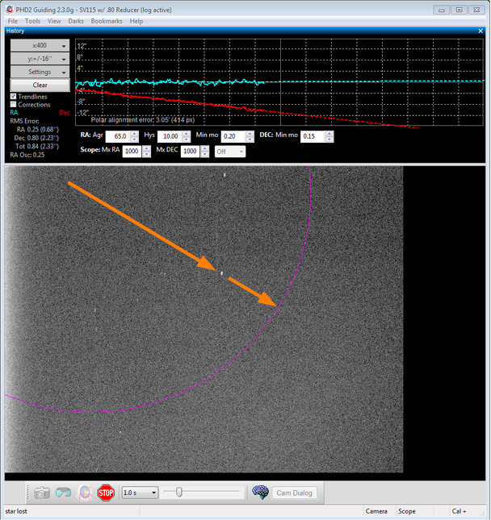
移动星点后，再点击“漂移”重新测量。点击之前，可以微调赤道仪重新居中星点、另选一颗星，或让指向更接近子午线。也可以点击星点自行选择，或者让 PHD2 自动选择。
漂移一小段时间后，会得到新的赤纬趋势线。判断它变好了、更接近水平，还是变差了、更偏离水平。请在“方位角调整备注（Azimuth adjustment notes）”区域记录旋钮的调整方式和斜率变化方向，下次就不必再猜。例如在作者的设备上，顺时针转动方位角旋钮会使斜率向下；写下这条备注，就能记住要让斜率向上时应逆时针转动。
重复测量和调整，直到得到良好的水平赤纬趋势线，如下图：
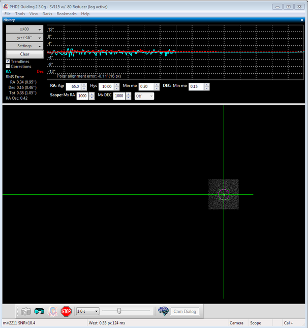
高度角调整
现在对赤道仪高度角重复上述过程。点击“高度（Altitude）”按钮，漂移工具会变为：
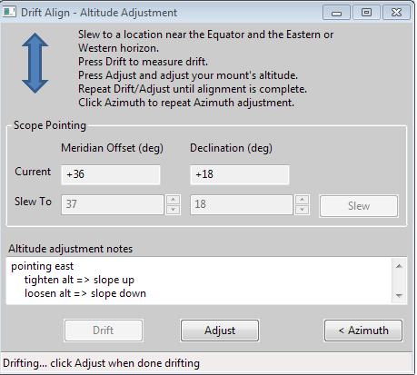
点击“转向”，或手动把望远镜移向东方或西方地平线附近：
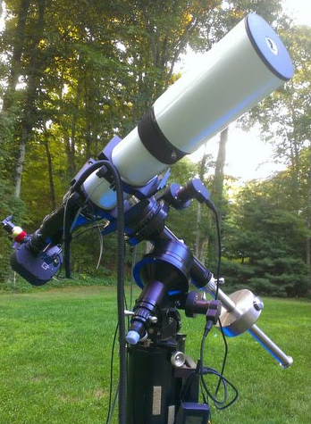
具体位置无需很精确，高出地平线约 23～35° 通常比较合适。
点击“漂移”开始测量。
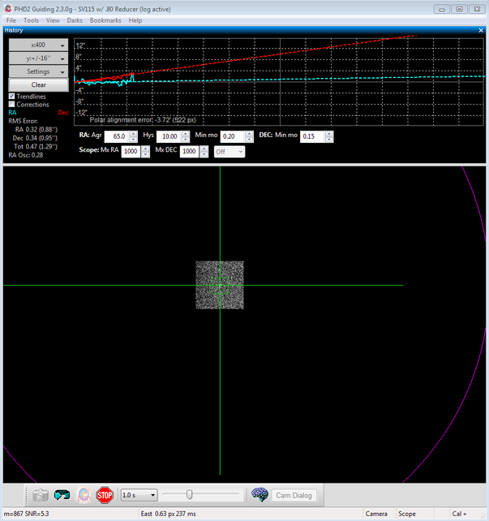
等待赤纬斜率稳定，点击“调整”，然后转动高度调节旋钮。参考此前保存在“高度调整备注（Altitude adjustment notes）”中的记录，决定向哪个方向转，才能让斜率按预期变化。例如作者的设备中，顺时针转动高度旋钮会让斜率向下。
与方位角调整一样，重复“漂移”和“调整”，每次测量后将星点移到品红色圆圈。目标仍然是让赤纬漂移趋势线水平。
使用书签
在熟悉自己赤道仪的漂移对极轴操作之前，“调整”这一步可能比较费时。开始时，需要摸清旋钮应转多少、向哪个方向转。为方便判断，PHD2漂移对极轴工具支持“书签”，可方便地标记调整前后导星星点的位置。通过“书签”菜单或下列快捷键操作：
- B：显示或隐藏书签。
- Shift-B：在当前导星星点的锁定位置添加书签。
- Ctrl-B：清除全部书签。
- 按住 Ctrl 点击图像某处：在该处添加书签，或删除那里已有的书签。
在调整赤道仪之前设置书签，就能清楚看到这次调整让星点在导星画面中移动了多少。关于 ASCOM 的说明
前面的说明和截图适用于通过 ASCOM 或 INDI 连接赤道仪的情况。如果没有这类连接，会有以下区别。
- 无法显示望远镜位置，也不能自动转向，需要自行移动望远镜。请记住，目标高度和方位都只是近似要求，不必追求精确，只要大致接近，且视场中有合适导星星点即可。
- 品红色实线圆会变为虚线圆。虚线圆表示星点所需移动距离的上限，而不是精确距离；我们只知道星点不应移过该圆。初次尝试时，可以先移动到大约一半距离，而不是直接移到圆上。每轮“漂移/调整”都可使用书签记录星点位置。
PHD2 静态极轴对准（SPA）工具
静态极轴对准工具有两种工作模式。自动模式要求赤道仪能由计算机控制转向，并报告当前位置；否则，可为 ST-4 类型导星接口，如“相机上”、GPUSB 等，或手动控制的赤道仪使用手动模式。SPA 会根据赤道仪能力选择合适的模式。
自动模式
自动模式下，PHD2 会按需移动望远镜，完成对准程序。因此必须通过 ASCOM 或 INDI 连接赤道仪，并且赤道仪已经初始化、可以执行 GoTo 转向。操作步骤如下：
- 将 PHD2 连接到相机，以及赤道仪的 ASCOM 或 INDI 驱动。
- 确认 PHD2 已针对当前设备组合完成标定。
- 手动调整赤道仪赤经轴，使其指向视天极 5° 以内，再将望远镜转到赤纬 +90° 或 -90°。德式赤道仪最好从重锤朝下、望远镜指向天极的姿态开始。利用星点对齐或图像解析，尽量接近赤纬 +90° 或 -90°。
- 对准过程中，赤道仪会向西转动 10°，请确保视野没有遮挡，也没有物体妨碍望远镜旋转。
从“工具 → 静态极轴对准（Static Polar Alignment）”打开 SPA，首先会显示以下窗口：
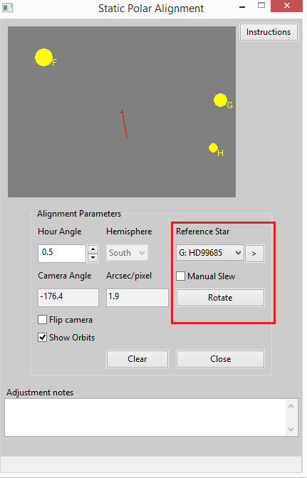
PHD2 主画面类似下图，这里以南天极为例：
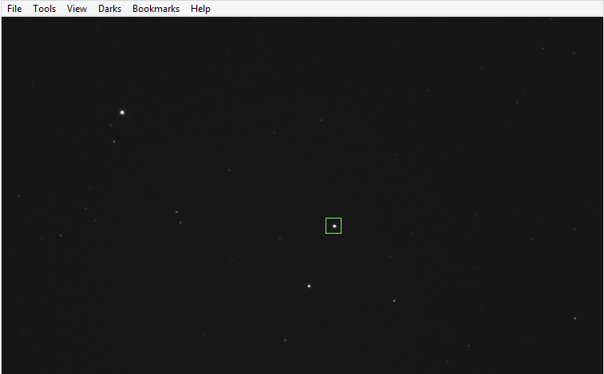
SPA 窗口上方的星图显示天极附近恒星的大致位置，方向取决于 PHD2 标定及赤道仪位置。可以调整“时角（Hour Angle）”，或使用“翻转相机（Flip Camera）”，让星图方向与主画面一致。双击星图某一点可将其移到中心；也可点击“>”按钮，把选定的参考星居中。
星图右侧按钮可在星图和 SPA 使用说明之间切换。
勾选“手动转向（Manual Slew）”即可改为手动控制。操作方法见下方手动模式说明。
根据星图，在 PHD2 主画面选择一颗“参考星（Reference Star）”，再用下拉列表指定选的是哪颗。选错也不用担心，稍后可以更正。
准备好后点击“旋转（Rotate）”。主画面会以小蓝圈标记当前位置，状态栏显示坐标。此时按钮变为“停止（Stop）”；如果要退出或停止赤道仪转动，点击它即可。
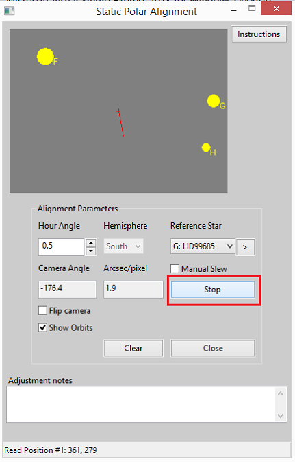
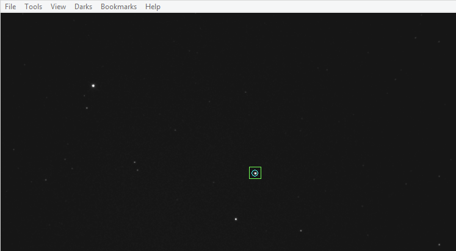
点击“旋转”后，赤道仪会沿赤经向西分小步转动，状态栏显示进度。记录两个位置点后，PHD2 主画面上就会叠加对准图形。
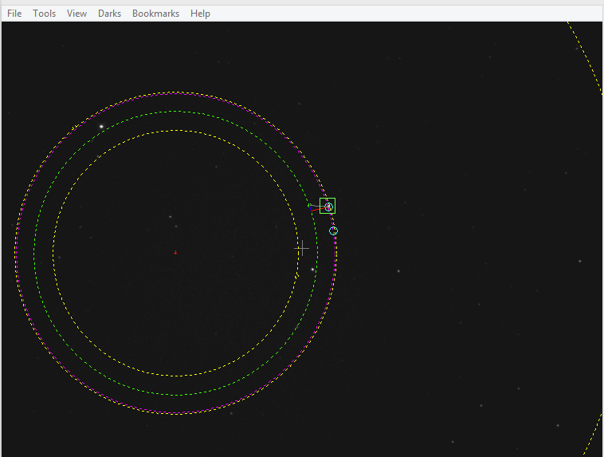
如果参考星识别有误，在下拉列表选择正确的星即可。
然后按照使用极轴对准叠加图中的说明调整赤道仪极轴。
手动模式
如果赤道仪驱动不支持 GoTo，或者希望自行控制望远镜转向，可以使用手动模式。操作步骤如下：
- 将 PHD2 连接到相机和赤道仪导星接口，例如 ST-4。
- 确认 PHD2 已针对当前设备组合完成标定。
- 手动调整赤经轴，使其指向视天极 5° 以内，再手动将望远镜转到赤纬 +90° 或 -90°。德式赤道仪最好从重锤朝下、望远镜指向天极的姿态开始。利用星点对齐或图像解析，尽量接近赤纬 +90° 或 -90°。
- 对准期间需要让赤道仪向西转动最多约 15°，请确保视野无障碍，也没有物体妨碍望远镜旋转。
从“工具 → 静态极轴对准”打开 SPA，首先显示以下窗口：
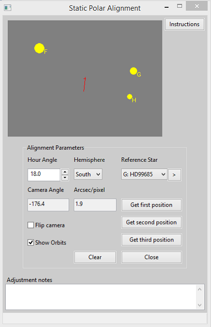
SPA 窗口上方的星图显示天极附近恒星的大致位置，方向取决于 PHD2 标定及赤道仪位置。可调整“时角”，或使用“翻转相机”，使星图方向与主画面一致。双击星图中的某点可将其居中；也可点击“>”按钮，将选定的参考星移到中心。
星图右侧按钮可以在星图和 SPA 操作说明之间切换。
勾选“手动转向”即可选择手动控制。请按照以下步骤进行手动对准。
根据星图在 PHD2 主画面选择一颗参考星，再从下拉列表指定其名称。选错也不要紧，稍后可以更正。
准备好后，点击“获取第一个位置（Get first position）”。主画面会以小蓝圈标记当前位置，状态栏显示坐标。
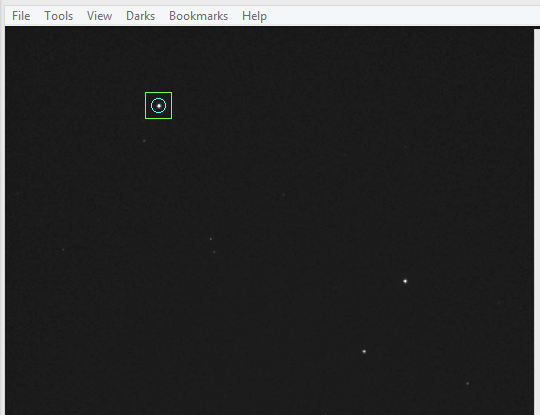
沿赤经向西移动至少 20 分钟时角；向西转动时，赤经读数减小。
在主画面中再次选择同一颗参考星。
点击“获取第二个位置（Get second position）”。该位置会用另一个小蓝圈标记，坐标显示在状态栏。
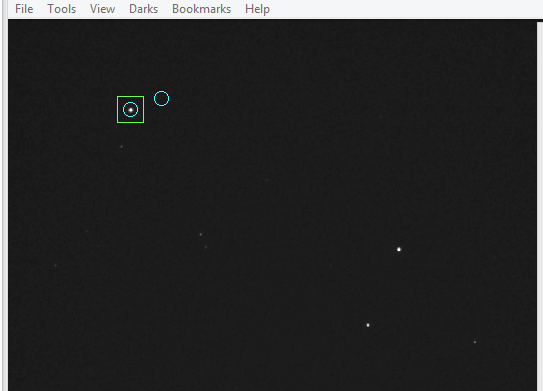
再沿赤经向西移动至少 20 分钟时角，然后再次选择同一颗星。
点击“获取第三个位置（Get third position）”。
稍等片刻，主画面将叠加对准图形。如果参考星选错，可在下拉列表中更正。如果某个测量点可疑，可以把赤道仪转回该处，点击相应按钮替换其坐标。如果不得不向东转，最好先稍微转过目标，再以向西方向完成最后的接近，以消除回差。也可以继续向西到新位置，用新点替换错误点。这些测量点不必按顺序排列。
修正后的对准图形会自动更新。
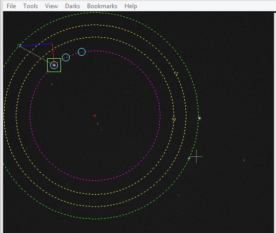
按下一节说明调整赤道仪极轴。
使用极轴对准叠加图
采集足够的测量点后，主画面就会显示极轴对准叠加图。
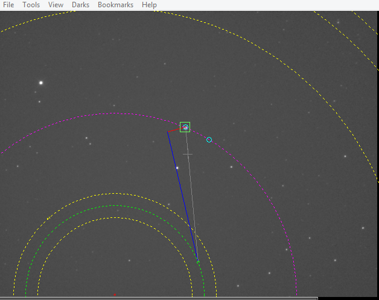
- 灰色加号表示画面中心。
- 红色加号表示旋转中心。
- 品红色圆表示参考星实际描出的轨迹。
- 绿色圆表示极轴准确对准时，参考星应当沿着的轨迹。
- 黄色圆表示其他参考星的轨迹。
每条绿色或黄色轨迹上的小圆圈，表示恒星应处的位置。灰线将当前参考星与绿色轨迹上的目标圆圈相连。这些目标位置只有在参考星识别正确时才有效。
蓝线表示参考星所需的方位角修正，红线表示所需的高度角修正。
为便于看清调整线，可以通过“显示轨迹（Show Orbits）”选项显示或隐藏圆形轨迹。
转动高度和方位调节旋钮，让参考星进入目标小圆。调整高度时，星点沿红线移动；调整方位时，星点沿蓝线移动。另一种方法是让三颗参考星分别落在各自轨迹上，使用手动模式时这一点尤其重要。
为了获得最高精度，先调整“时角”，直到主画面中的各颗星相对其目标圆的偏移量和方向都相同，然后再调整赤道仪。
可以重复整个过程确认结果。如果调整幅度较大，可能需要改变赤纬指向，让天极区域继续居中。可见天空范围有限时，也可能需要把赤道仪转回初始位置。完成后点击“关闭（Close）”。如果极轴调整很大，建议重新标定。
PHD2 极区漂移对极轴工具
极区漂移对极轴与原始漂移对极轴工具原理相似，区别是在天极附近测量漂移，同时计算方位角和高度角所需的调整。但参考星离天极越远，精度越低；而且测得的调整量可能需要一段时间才稳定，所以静态极轴对准可能更快。极区漂移法的主要优点是可以选择任意一颗星，工具只需知道所在半球，而且无需事先进行 PHD2 标定。
开始时按以下步骤操作：
- 将 PHD2 连接到相机。
- 手动调整赤道仪赤经轴，使其指向视天极 5° 以内，再将望远镜转到赤纬 +90° 或 -90°。德式赤道仪最好从重锤朝下、望远镜朝向天极的姿态开始。
- 检查半球识别是否正确，必要时更改。
- 如果相机图像是镜像，例如离轴导星器上的导星相机，请勾选“镜像图像（Mirror image）”。
- 在主画面选择合适的导星星点。
点击“开始（Start）”进行漂移测量。
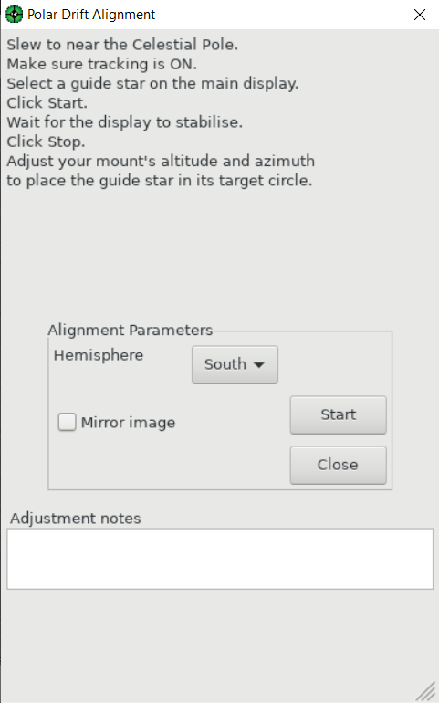
很快主画面就会出现红线，表示为减小漂移所需的星点调整。开始时红线可能大幅变化，随后逐渐稳定。
稳定后点击“停止”。调整标记会保留在主画面上。
转动高度和方位调节旋钮，将导星星点移入红线末端的红色圆圈。
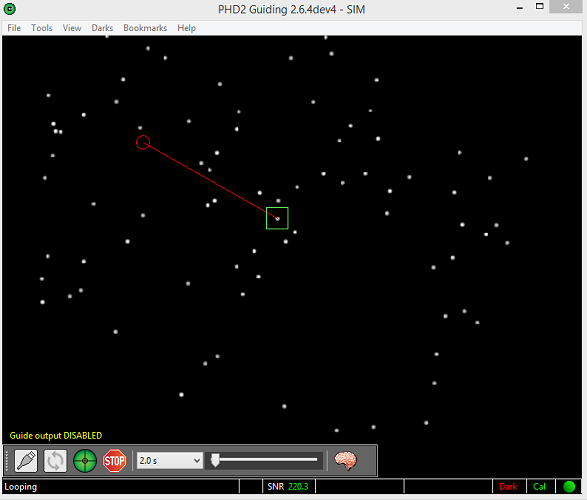